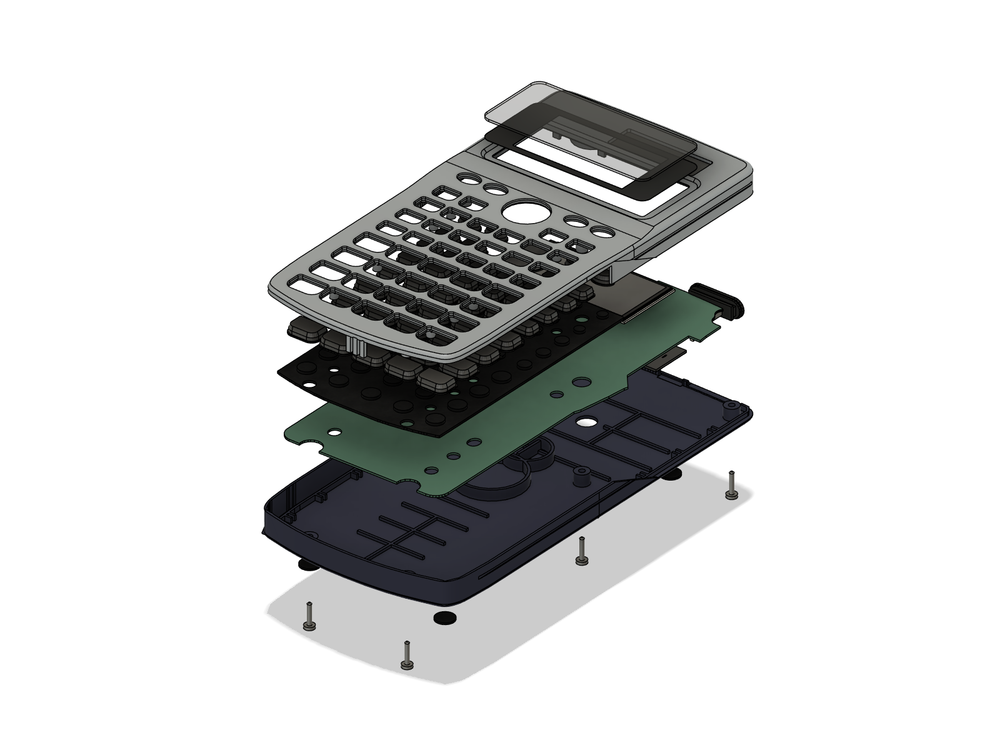
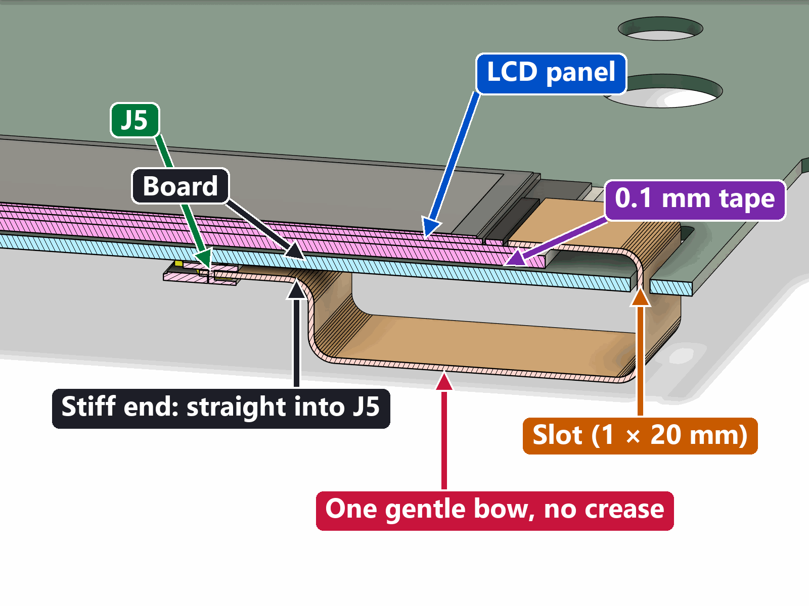
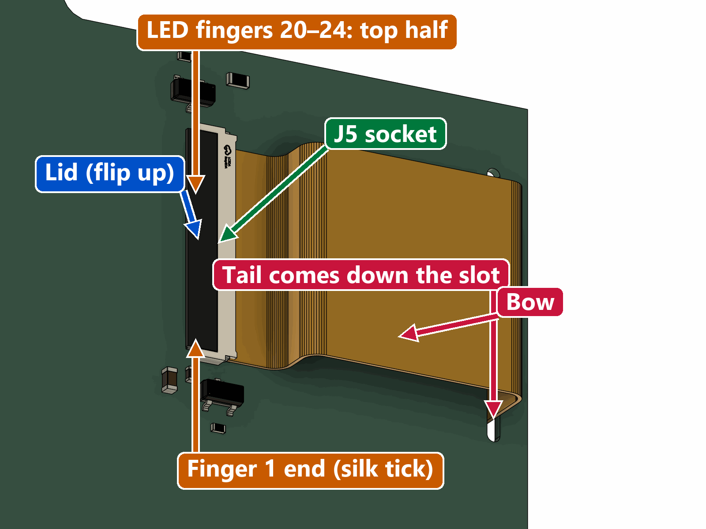
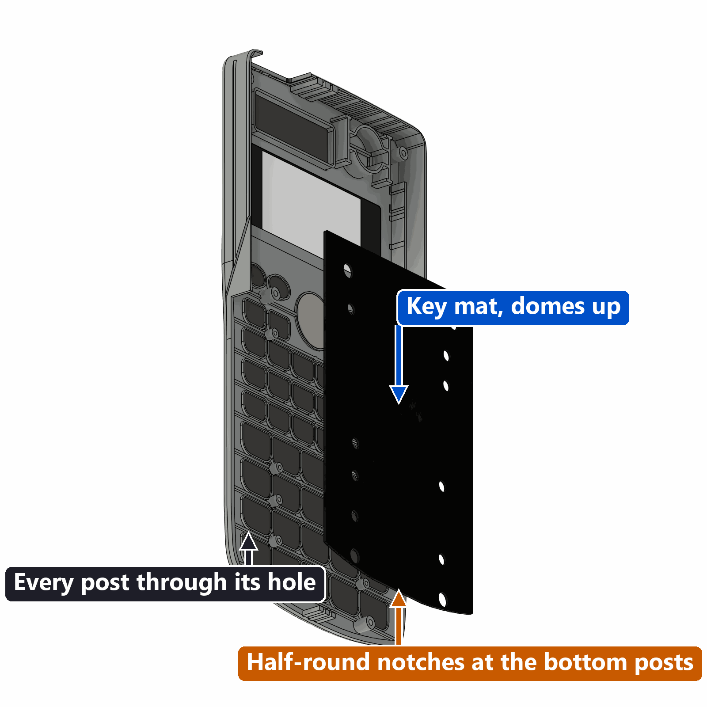

AI Calculator · board v15-LCD (colour screen) · Casio fx-115ES shell
v15 Assembly Guide
How to turn a tested v15-LCD board, a ground fx-115ES shell and the bought parts into a finished calculator with the colour screen. Same order as the v14 (e-paper) guide; only the screen steps are new. Build one calculator at a time, in order. Tick each box as you go. Ticks are saved in this browser only, separately for calculator 1 and calculator 2, and separately from the v14 guide.
Every picture opens full size when you tap it. Labels: suggestion = my idea, the project docs say nothing. unsure = not checked on real parts, or the docs disagree. Times are rough. No v15 calculator has been built yet: the 3D pictures come from the Fusion model of the review-13 board.
- No power while you plug a ribbon. Never plug or unplug a ribbon (LCD or camera) while the board has any power. Once the battery is in J4, the board is always powered. So both ribbons go in before the battery.
- Never crease the LCD tail. It goes down the slot and makes one soft bow to J5. No folds, no Z-fold, no pinching. A crease can break the tracks inside it, and you can't see that until the screen fails.
- Finger 1 to the silk tick. The LCD tail goes into J5 with its finger-1 end (found with the meter) at the bottom of J5, next to the small silk tick. Never guess.
- Glue the magnet piece last. Only after its meter check has passed.
- Never grind, file or force a post. If the board sticks on post H6, file the board's hole a little towards the top of the board. And keep TP1, TP4 and TP7 clear of tape, foam and glue.
- Never burn eFuses, and never turn on secure boot or flash encryption.
··Words you'll meet
- LCD
- The new colour screen: a 1.9-inch, 320 × 170 pixel panel (about 50 × 26 mm, 1.4 mm thick). It has its own light behind the picture (the backlight).
- Tail (FPC)
- The thin, flat, flexible cable that comes out of the LCD, 15.5 mm wide and 36.6 mm long, with 30 gold fingers at its tip. FPC means "flexible printed circuit". Bend it gently over a fingertip; never crease it.
- Stiffener
- The last 4.5 mm of the tail is backed with a stiff strip, so the tip can be pushed into the socket. That part stays straight.
- Finger 1
- The gold finger at one end of the tail. It must go to pad 1 of J5. You find it with the meter's diode test and mark it with a dot.
- Connector latch (lid)
- The small hinged bar on a ribbon socket (J1, J5). Lift it to open the socket, slide the ribbon in, press it flat to lock. A ribbon never goes in or out while the lid is closed.
- J1, J3, J4, J5
- Names printed on the board for its connectors. J1 = camera ribbon. J3 = magnetic charging piece. J4 = battery plug. J5 = LCD tail (new on v15; v14's J2 is gone).
- Slot
- The long narrow hole near the board's edge (1 × 20 mm). The LCD tail goes through it from the key side to the component side.
- ESD
- Static electricity. A spark you don't even feel can kill the LCD's driver chip. Touch something grounded (a radiator, the PC case) before you handle the panel, and don't work on carpet in socks.
- Test pad (TP)
- A small round bare copper spot on the board, labelled TP1, TP2… TP1 = BOOT, TP4 = GND (ground, 0 V), TP7 = EN (reset).
- Polarity
- Which wire is + and which is −. Battery and charging power only work one way round. Backwards can damage parts.
- Kapton
- Thin, orange, heat-proof tape that doesn't conduct electricity. You put it between parts so nothing bare touches.
- Meter modes
- "Beep" (continuity) beeps when two points are connected by metal. "Diode" mode pushes a tiny current and shows the voltage it needs: a lit LED shows about 2.5 V.
- Key side / component side
- The board's two faces. Key side: the flat side with the key pads, facing the keys and the screen. The LCD is taped here. Component side: the side with all the parts, facing the back cover.
00Overview: what goes where
The board sits in the front shell exactly where Casio's board was, key side towards the rubber key mat. The LCD is taped to the key side, behind the display window. Its tail goes down through a slot in the board, makes one soft bow under the board and plugs into J5 on the other side. The camera, the battery and the magnetic charging piece are all on the component side, facing the back cover, exactly as on v14.



The order of work
- 1Take the Casio apart
- 2Grind the shell
- 3Test the bare board, free the LCD
- 4Prepare parts
- 5LCD on, tail into J5
- 6Camera on
- 7Magnet piece into J3
- 8Mat, board into shell, glue magnet
- 9Battery into J4
- 10Close
- 11Final test
Battery is lastThe board goes into the shell (step 8) before the battery (step 9). The battery lies beside the board and plugs into J4, so it can only go in once the board is seated. It must be the last thing connected.
Parts for one calculator
Tools
Multimeter (volts, beep, diode, mA), two sewing pins for fine probe tips, calipers, fine tweezers, a plastic card or guitar pick, flat pliers, side cutters, small Phillips screwdriver suggestion, the grinding kit from the grinding guide, a phone charger (only for the magnet check), a computer USB port, a PC with VS Code + PlatformIO and the repo's firmware-v15-lcd, a 2.4 GHz phone hotspot, a printer for the two paper templates.
01Take the Casio apart
Identical to v14. You keep the outside and throw out the insides. Keep: front shell, back cover, rubber key mat, key caps, display window, battery lid, rubber feet, all 6 screws. Remove: the Casio board, the Casio LCD module, the LR44 coin cell. The docs don't describe how this Casio comes apart, so these steps are general practice suggestion.


only the empty shell halves, the key mat, the key caps, the small parts and 6 screws are left, labelled 1 or 2.
02Grind the shell
The grinding is exactly the same as for v14. The 3D check of the v15 model found nothing of the LCD, its tail or J5 touching the un-ground shell, so there is no new grind and none can be skipped. Follow the Shell Grinding Guide step by step: it has the tools, safety rules, before/after pictures and the depth to check for each zone. In short:
| Zone | Part | What | Why |
|---|---|---|---|
| 1 | Back cover | Solar box flat to the floor, no stub | J4 is only 0.41 mm from the floor after this |
| 2 | Back cover | Rib B flat for 14 mm over the camera | The camera lens would hit it |
| 3 | Back cover | Camera window: 7 mm drill (small pilot hole first) | The camera's view. See the note below |
| 4 | Front shell | LR44 cup: don't grind | Not needed with the battery on the back floor |
| 5 | Front shell | U-notch in the top wall for the magnet face | The magnet face sits flush in it |
| 5b | Back cover | Lip under the magnet notch, only if your cover has a lip there | The magnet body would hit it |
| 6 | Front shell | Side-wall relief on the solar-window side, only if the paper template won't drop in | The board's top corner and the ESP32 antenna tab |
| 6b | Front shell | Snip the 3 pins and 3 wire hooks on both inner side walls flush with the rib | They cross the board plane |
| 6c | Front shell | Rib ends, only if the paper dry fit says so (the grinding guide's check) | Decided on your shell, not modelled |

Rib B, the rib you grind flat over the camera in zone 2, carries on un-ground towards the cover's side, and the LCD tail's bow hangs over that part (seen from the inside, to the right of the camera hole). In the model the bow clears its top by only about 0.25 mm with a 36.6 mm tail, and about 0.1 mm with the longest tail the drawing allows (36.9 mm). Don't grind more of it for now (it is not in any zone): in step 10 you check that the bow doesn't sit on it. If it does, grinding zone 2 about 15 mm further towards that side is the likely fix: ask first rib height from the replica model.
Measure the camera ribbon from the module's far edge to its tip (bring-up step 5). 70.3 mm or more: drill at the normal spot (centre of rib B) now. Shorter: wait. In step 6 the camera moves up to 1.7 mm towards J1, and you drill where the lens really ends up.
all planned zones are ground, nothing else is touched, and the shell is clean and dry.
03Test the bare board, free the LCD
Before anything goes into a shell, the bare board must pass the v15 First Power-Up Guide: inspection, meter checks, first power on USB, flashing firmware-v15-lcd, the self-test, then screen, camera and battery one at a time. This guide doesn't repeat it. The ER-TFT019-1 arrives as a bare panel, so there is nothing to free: handle it by its edges (glass and backlight together), leave the clear protective film on the glass until step 8, store it glass side down on a soft cloth and never bend the tail at its root. Skip the next part.
Only if your panel is on an Adafruit #5394 breakout: taking it off
On the breakout, the bare panel is held on the front by double-sided tape, and its tail wraps round the board's edge into a 30-pin socket on the back. You want only the panel. The socket type is read from Adafruit's PCB files, not seen yet: check when yours arrives
- Power good: TP5 reads 3.25–3.35 V, TP7 high, nothing warm.
firmware-v15-lcdflashed;statusshowsv15lcd-….- LCD tail diode test done, finger-1 corner marked on the stiffener (power-up step 5).
- Self-test with LCD and camera connected: colour bars seen, backlight sweep seen,
lcd_ok,backlight_ok,camera_ok,keypad_scanner_ok,wifi_okall true. The 50-key test waits until the key mat is on (step 8). - Panel flags settled (colours right way round), written on the bag.
- Battery charging seen in
status; AI settings in (power-up step 11).
the board passed every check above, the panel is bare (or free of its breakout) with finger 1 marked, and the board is unpowered.
04Prepare the parts
Most of these checks are in the power-up guide (its steps 3–5). If you did them there, just tick them here. Do them on the real parts of each calculator.

Magnet piece
Battery
Camera
LCD
the magnet leg is marked and straight, the battery is checked and wrapped, the camera ribbon is measured, the LCD's finger 1 is marked, and the tape, jig and mask template are ready.
05LCD onto the board, tail into J5
The panel lies flat on the board's key side, screen facing out through the window. Its tail leaves the panel's short end, runs about 5 mm on the key side to a 1.0 × 20 mm slot, goes straight down through the board, makes one soft bow under the board (towards the back cover) and comes back up into J5, the stiff tip going straight in. The tail is 36.6 mm; the direct route is about 30.2 mm, so the bow takes up about 6.4 mm. In the model it hangs about 4.7 mm below the board, with bends of about 1.2 mm radius: a soft U, not a fold.





Lay and tape the panel
Tail down the slot and into J5
Each extra mm of tail makes the bow about 0.5 mm deeper. The model has only about 0.25 mm between the bow and the un-ground part of rib B in the back cover with a 36.6 mm tail; at 36.9 mm (the longest the ER-TFT019-1 drawing allows) it is about 0.1 mm, and from about 37.1 mm the bow touches the rib. Touching lightly is harmless; being squeezed by the closed cover is not. You check it in step 10. If it squeezes, ask before doing anything else.
Quick screen test (optional here, required in step 8)
Only if the magnet piece is still pushed into J3 from the power-up guide: snap the cable on (no battery) and type selftest, q to skip the keys. Colour bars, grey ramp and border appear, then the backlight sweeps up. Cable off again before going on. Otherwise this test happens in step 8.
Window mask: hides the panel's border and the tail
Through the clear window you would see the panel's black glass border, the tail end and the board around the panel. A thin matte-black sticker on the inside of the window lens hides everything except the picture. It sits about 1.5 mm above the panel, so it never touches it. The v15 opening is centred, not off-centre like v14's.


hardware/enclosure/final_assembly_v15_lcd/), matte black sticker paper or black vinyl (0.08–0.15 mm), a steel ruler, a new craft-knife blade, isopropyl alcohol.Viewing angleThe whole picture shows straight on and up to about 19° off to the side; tilt it further and the mask edge starts to cover the far edge of the picture (a few rows at 30°). That's normal for a mask above the glass if it bothers you: cut the opening at 45.5 × 24.0 for about ±43°, the panel's own black border then shows.
the panel is taped flat and centred in the window, its tail goes down the slot in one soft bow into J5 with finger 1 at the silk tick, the lid is closed, and the mask is on the lens.
06Camera onto the board
Unchanged from v14. The camera sits on the component side, lens pointing at the back cover, centred under the 7 mm hole. Its ribbon lies flat and runs straight to J1. The LCD tail's bow is beside it, about 4 mm away: they don't touch.


If the camera fails laterJ1's pin order is about 90 % sure. If camera_ok is false after reseating once, the known fix is a 180° twist in the ribbon. The power-up test should already have settled this.
the camera is stuck down under the hole, the lens shows in the middle of the hole, and the ribbon is flat and locked in J1.
07Magnet piece into J3
Unchanged from v14. J3 is a sideways socket at the board's top edge, its holes facing the top wall. The magnet piece's legs push into it. Later its face is glued flush in the U-notch. The glue takes the cable's pull, never the legs.


Why polarity matters hereBackwards, the cable's 5 V lands on the board's GND. A phone charger can then push 2 A or more through D7 and the charger chip. Never test that on purpose.
the marked leg is in pin 1, the pin-4 leg beeps to TP4, and the piece sits square on the board edge.
08Key mat and board into the front shell





Screen and key test before gluing (cable power, no battery)
Glue the magnet
the board sits flat, the screen test shows the full pattern inside the mask, all 50 keys count, and the magnet is glued flush and set.
09Battery
Unchanged from v14. The battery (Adafruit #1317, 150 mAh) lies flat on the back-cover floor, in the top-left corner as seen from the front, beside the board. Its long side (26 mm) runs left to right and the wire end faces right, towards J4. From now on the board is always powered. (The LCD tail's bow is more than 5 mm from the battery.)
Finding the spot: push the battery's top edge up against the lip of the top wall, then slide it left until there is a 2.5 mm gap (a 2.5 mm drill shank is a good feeler) between its left edge and the round screw post in the corner.


the plug is home in J4, the battery is snug under the test-fitted cover, and TP1/TP4/TP7 are bare.
10Close up


the cover sits flat with no gap, all 6 screws are snug, and the lid and feet are on.
11Final test


Self-test: screen and backlight
Live camera preview
AI solve through the proxy
Charging and sleep
SELF-TEST PASS with the full colour pattern and the backlight sweep, a live colour preview, an AI answer on battery, charging shown in status, and memory survived a night off.
12Problems and reopening
| Problem | Likely cause | What to do |
|---|---|---|
| Back cover won't close, gap at the rim | Stub left on the solar box, camera on foam, magnet hits a lip (5b), LCD bow squeezed on rib B, foam or thick tape on the battery | Open. Colour the ribs with marker, close gently, open, look for marks. Never fold the LCD tail to make room: ask |
| Board won't drop onto the posts | H6 (0.10 mm play) | File H6's hole towards the board's top. Never the post |
| Keys missing in the self-test | Dust on a dome or pad, mat folded, board not pressed down | Open, clean the dome and pad with a dry brush, re-lay the mat, screws snug |
| Screen dark, backlight on | Tail pulled part-way out of J5 when the board went in, or in the wrong way round | Unplug the battery first, then reseat J5: dot at the silk tick, fully in, lid closed |
| Screen dark, no light | Tail not in J5 or lid open | Battery off, reseat. Still dark: back to the power-up guide's step 9 table |
| Picture not centred in the mask | Panel taped off-centre, or mask placed off-centre | Small: leave it. More than about 0.5 mm of picture hidden: open, lift the panel (the 0.1 mm tape lets go), re-place it with the jig |
| Bright spot or patch on the picture | Dust or a grain under the panel, or something pressing on it | Open, lift the panel, clean, re-tape |
| Lines or flicker that come and go when you press the case | Tail cracked at a sharp bend, or not fully in J5 | Battery off, reseat. If it stays: the tail is damaged; a new panel is needed |
| Wrong colours, upside down | Firmware panel settings | Power-up guide step 9 table |
camera_ok false | Ribbon not seated, or reversed | Battery off, reseat J1; then try the 180° twist |
| Camera picture dark at one side | Hole off-centre from the lens | Move the camera slightly (within its 1.7 mm) or open the hole carefully |
| No charging, no COM port | Magnet face sunk in, legs pulled out of J3, deep sleep | Press ON. Check the face is flush. Then the TP1 + TP7 rescue |
| Restarts during the preview or AI SOLVE | Battery voltage dips (brownout) | Note it and ask (the firmware can dim the light while Wi-Fi joins) |
| Battery runs down in hours | Screen time-outs off (screen dim 0 left from the power-up test) | screen dim 20, screen off 60, bright 60 |
| Rattle | Battery loose | Re-stick it to the floor with fresh 0.1 mm tape; never add foam on top |
| "Not set up yet: SETUP 6" | Server address or token missing | SHIFT MODE, 6, = and the phone form, or power-up guide step 11 |
Reopening safely
Taking the board out againThe docs don't cover this. The magnet is glued in the shell and its legs sit sideways in J3, so lifting the board straight up would bend the legs. Soften or cut the glue first (hot glue is easier), lift the board and magnet out together, then pull the legs out of J3. Open J5's lid before you lift the panel off the board suggestion.